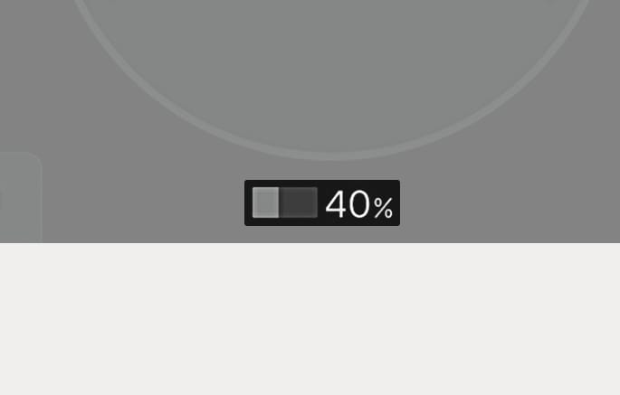

고전압 배터리 충전량 표시계

2C_BatteryLevelGauge
고전압 배터리의 충전 상태를 백분율로 표시합니다.
-
100 %일 때 완전 충전 상태입니다.
-
충전량이 10 % 이하가 되면 배터리 경고등이 표시됩니다. 배터리 경고등이 표시되면 차량을 충전하십시오.
-
고전압 배터리 충전량이 부족하면 차량의 출력이 제한될 수 있습니다.
-
파워다운 (
® ) 표시등이 켜지면 주행 속도가 제한될 수 있으며, 경사로를 오르기 어려울 수 있습니다. 즉시 차량을 충전하십시오.
-
고속도로나 자동차 전용 도로를 주행하기 전에 고전압 배터리의 충전량이 충분한지 확인하십시오.
-
경고등이 켜지면 즉시 가까운 충전소에서 차량을 충전하십시오. 경고등이 켜진 이후에는 도로의 경사도나 주위 온도 등 주행 환경에 따라 원활한 주행이 어려울 수 있습니다.